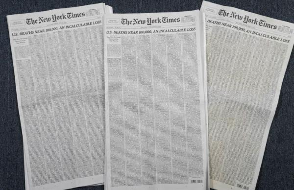

更多内容
联系我们
攀枝花学院2018级软件工程
联 系 人：陈健
电 话：18183267596
Q Q：915617494
地 址：四川省攀枝花市东区机场路10号
联 系 人：陈健
电 话：18183267596
Q Q：915617494
地 址：四川省攀枝花市东区机场路10号
新闻动态
位置：首页>新闻动态
新冠疫情中的美国悼亡日

美国新冠死亡人数正逼近10万。5月24日出版的《纽约时报》头版刊登了1000位逝者的姓名、年龄和职业等信息，密集的排版给人强烈的视觉震撼。（新华社记者王迎摄） 一方面，诸多迹象显示疫情似已熬过高峰。当前，美国每日新增死亡病例已从4月中旬高峰期的逾两千例降至数百例。截至5月20日，全美50个州都不同程度地放宽了居家令等社会疏离措施，许多属于“非必要营运”的企业重新开门。悼亡日这天，美国多地艳阳高照，餐馆、酒吧、咖啡馆纷纷开张，在公园、湖畔、码头和海滩，人们对重返户外和社交生活热情高涨。 另一方面，全美新冠死亡病例25日晚超过9.82万例，接近10万例关口。3月8日，全美仅有22例新冠死亡病例，到4月8日飙升至16673例，5月8日则达到77380例，残忍演绎了何为指数级增长。健康指标和评估研究所近日预测，截至8月4日，美国新冠死亡人数可能超过14万。随着全美逐步复工复产，一些州的新冠病例仍在增加，公共卫生专家再三警告第二波疫情来袭的风险，很多美国民众仍然惊魂未定。